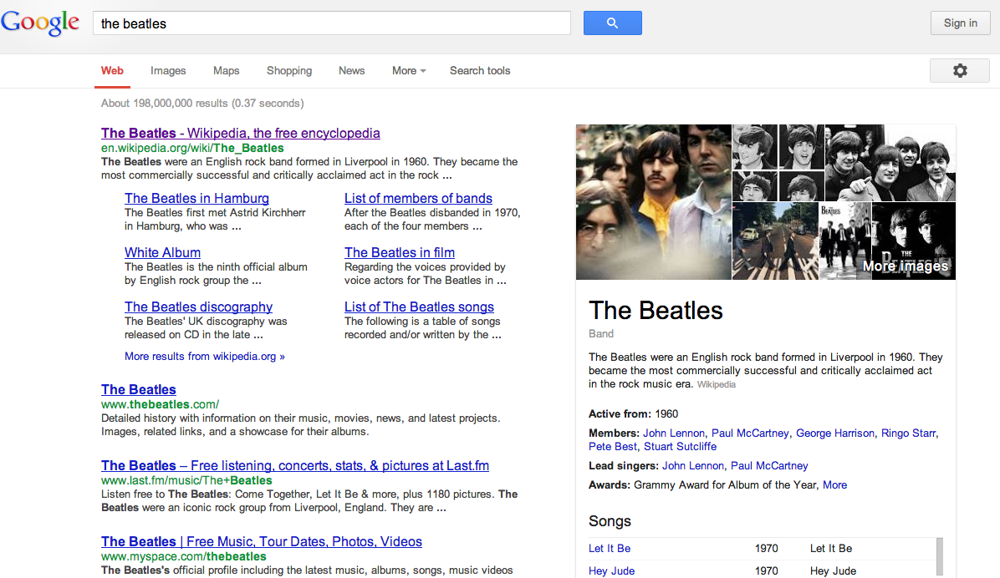

Search engines collect information about web resources in order to enrich how search results are displayed. Snippets are the few lines of text that appear underneath a search result link to give the user a better sense of what can be found on that page and how it relates to the query. Rich snippets provide more detailed information, by understanding something about the content of the page featured in the search results. For example, a rich snippet of a restaurant might show a customer review or menu information. A rich snippet for a music album might provide a track listing with a link to each individual track.
Figure 21: Example of a Rich Snippet.
Rich snippets are created from the structured data detected in a web page. The structured data found in a web page may be represented using RDFa as the mark up format and schema.org as the vocabulary. schema.org is a collaboration between Google, Microsoft and Yahoo! to develop a markup schema that can be used by search engines to provide richer results.
schema.org provides a collection of schemas for describing different types of resource such as:
Data represented using schema.org is recognized by a number of search engines such Bing, Google, Yahoo! and Yandex. schema.org also offers an extension mechanism that a publisher can use to add more specialised concepts to the vocabularies. The aim of schema.org is not to provide a top-level ontology, rather it puts in place core schemas appropriate for many common situations and that can also be extended to describe things in more detail.
Google knowledge graph uses structured data from Freebase to enrich search results. For example a search for the Beatles could include data about the band and its membership. In the snapshot of Figure 3.22 this can be seen in what is called a disambiguation pane to the right of the search results. This additional information could help the user to disambiguate between alternative meanings of their search terms. Google knowledge graph can also allow users to access directly related web pages that would otherwise be one or more navigation steps away from their search results. For example, the search for a Beatles album could provide links giving direct access to tracks contained on the album.

Figure 22. Google search for The Beatles showing a disambiguation pane.
Bing is now providing similar functionality to Google Knowledge Graph but built on the Trinity graph engine. A Bing search for “leopard” would produce structured data and disambiguation as shown in Figure 23.
Figure 23: Bing search for Leopard showing disambiguation.
The above examples use data graphs that connect entities to enrich search results. The Open Graph Protocol, originally developed by Facebook, can be used to define a social graph between people and between people and objects. The Open Graph Protocol can used to express friend relationships between people and also relationships between people and things that they like: music they listen to, books they have read, films they have watched. These links between an object and person are expressed by clicking Facebook “like” buttons that can be added by publishers to websites outside the Facebooks domain. RDFa embedded in the page provides a formal description of the “liked” item. The Open Graph Protocol supports the description of several domains including music, video, articles, books, websites and user profiles.
Figure 24: Example Open Graph relationships (from [22]).
The Open Graph Protocol can be used to express different types of actions for different types of content. For example, a user can express that they want to watch, have watched or give a rating for a movie of TV programme. For a game, a user may record an achievement or high score.
This social graph of people and objects can then be used in Facebook Graph Search. This can be used to search not only for objects, but for objects liked by friends that have other properties such as living in a particular location.
Figure 25: Facebook Graph Search.